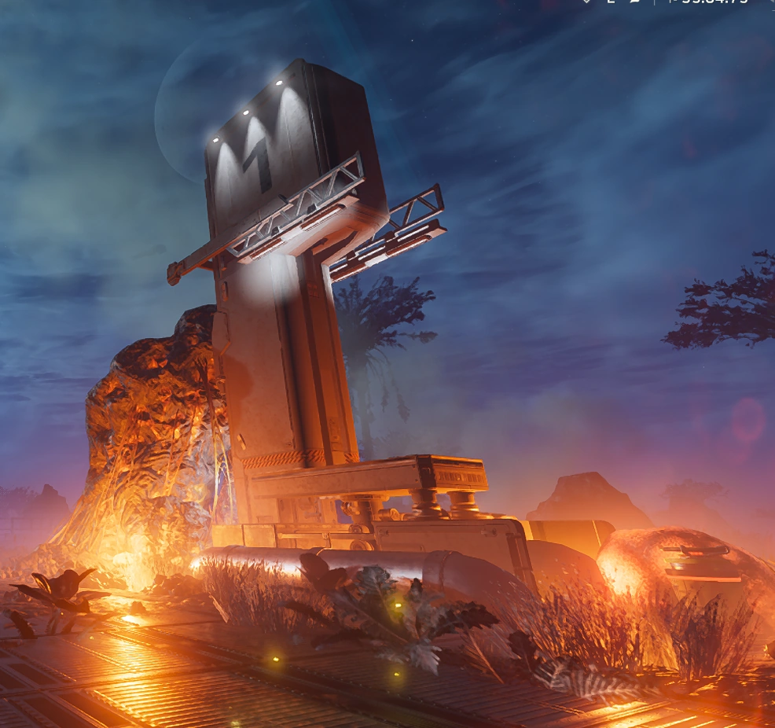

The main facilities of Super Earth Mining are dedicated to the
managed,
democratic process of liberating precious Element-710 fuel from the
Terminid
swarm. Working alongside tireless helldiver forces, we capture and
cultivate
these bugs for decomposition, allowing for the extraction of E-710
which powers
a diverse set of machinery, from our Super Destroyer fleets to the
Super Sedans
of the valued citizens on Super Earth.
Our mission is to liberate every bug controlled planet. Below, you can find the statistics of how our tireless helldivers are faring.
| Planet | Liberation | Status |
|---|---|---|
| Malevelon Creek | 100% | Liberated |
| Estanu | 26% | Declining |
| Crimsica | 89% | Increasing |
| Erson Sands | 43% | Stalemate |